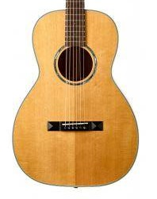
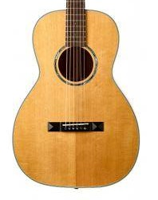

Guitarra española clasica
 

La guitarra clásica española es un símbolo de la tradición musical, reconocida por su tono cálido y resonante. Ideal para intérpretes de todos los niveles, esta guitarra ofrece una experiencia de toque suave y precisa.
- Cuerpo de madera maciza que proporciona una excelente resonancia y durabilidad
- Diapasón de palisandro que asegura una sensación cómoda y una respuesta rápida
- Roseta decorativa artesanal que añade un toque de elegancia y autenticidad
- Cuerdas de nylon para un sonido clásico y una tensión suave
- Clavijero de afinación precisa para mantener la estabilidad tonal durante las interpretaciones